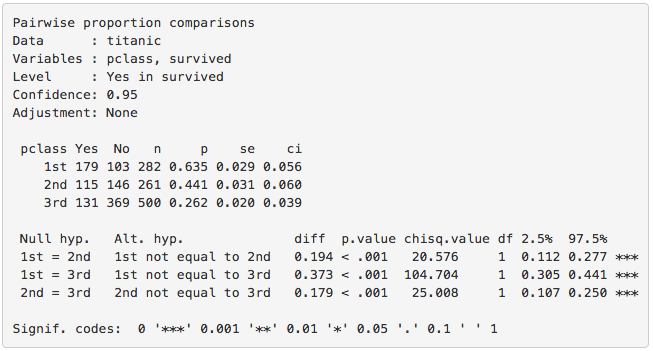
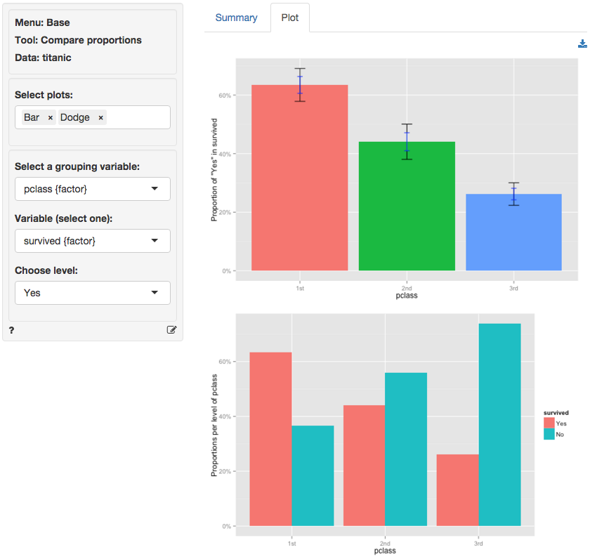

Base > Compare proportions
Compare proportions for two or more groups in the data
The compare proportions test is used to evaluate if the frequency of occurrence of some event, behavior, intention, etc. differs across groups. The null hypothesis for the difference in proportions across groups in the population is set to zero. We test this hypothesis using sample data.
We can perform either a one-tailed test (i.e., less than or greater than) or a two-tailed test (see the Alternative hypothesis dropdown). A one-tailed test is useful if we want to evaluate if the available sample data suggest that, for example, the proportion of dropped calls is larger (or smaller) for one wireless provider compared to others.
Example
We will use a sample from a dataset that describes the survival status of individual passengers on the Titanic. The principal source for data about Titanic passengers is the Encyclopedia Titanic. One of the original sources is Eaton & Haas (1994) Titanic: Triumph and Tragedy, Patrick Stephens Ltd, which includes a passenger list created by many researchers and edited by Michael A. Findlay. Lets focus on two variables in the database:
- survived = a factor with levels
YesandNo - pclass = Passenger Class (1st, 2nd, 3rd). This is a proxy for socio-economic status (SES) 1st ~ Upper; 2nd ~ Middle; 3rd ~ Lower
Suppose we want to test if the proportion of people that survived the sinking of the Titanic differs across passenger classes. To test this hypothesis we select pclass as the grouping variable and calculate proportions of yes (see Choose level) for survived (see Variable (select one)).
In the Choose combinations box select all available entries to conduct pair-wise comparisons across the three passenger class levels. Note that removing all entries will automatically select all combinations. Unless we have an explicit hypothesis for the direction of the effect we should use a two-sided test (i.e., two.sided). Our first alternative hypothesis would be ‘The proportion of survivors amongst 1st class passengers was different compared to 2nd class passengers’.

The first two blocks of output show basic information about the test (e.g.,. selected variables and confidence levels) and summary statistics (e.g., proportions, standard errors, etc. per group). The final block of output shows the following:
Null hyp.is the null hypothesis andAlt. hyp.the alternative hypothesisdiffis the difference between the sample proportion for two groups (e.g., 0.635 - 0.441 = 0.194). If the null hypothesis is true we expect this difference to be small (i.e., close to zero)p.valueis the probability of being wrong if we choose to reject the null hypothesis (i.e., the type I error)
If we check Show additional statistics the following output is added:

chisq.valueis the chi-squared statistic associated withdiffthat we can compare to a chi-squared distribution. For additional discussion on how this metric is calculated see the help file in Base > Cross-tabs. For each combination the equivalent of a 2X2 cross-tab is calculated.dfis the degrees of freedom associated with each statistical test (1).2.5% 97.5%show the 95% confidence interval around the difference in sample proportions. These numbers provide a range within which the true population difference is likely to fall
Testing
There are three approaches we can use to evaluate the null hypothesis. We will choose a significance level of 0.05.1 Of course, each approach will lead to the same conclusion.
p.value
Because the p.values are smaller than the significance level for each pair-wise comparison we can reject the null hypothesis that the proportions are equal based on the available sample of data. The results suggest that 1st class passengers were more likely to survive the sinking than either 2nd or 3rd class passengers. In turn, the 2nd class passengers were more likely to survive than those in 3rd class.
confidence interval
Because zero is not contained in any of the confidence intervals we reject the null hypothesis for each evaluated combination of passenger class levels.
t.value
Because the calculated chi-squared values (20.576, 104.704, and 25.008) are larger than the corresponding critical chi-squared value we reject the null hypothesis for each evaluated combination of passenger class levels. We can obtain the critical chi-squared value by using the probability calculator in the Base menu. Using the test for 1st versus 2nd class passengers as an example, we find that for a chi-squared distribution with 1 degree of freedom (see df) and a confidence level of 0.95 the critical chi-squared value is 3.841.

In addition to the numerical output provided in the Summary tab we can also investigate the association between pclass and survived visually (see the Plot tab). The screen shot below shows two bar charts. The first chart has confidence interval (black) and standard error (blue) bars for the proportion of yes entries for survived in the sample. Consistent with the results shown in the Summary tab there are clear differences in the survival rate across passenger classes. The Dodge chart shows the proportions of yes and no in survived side-by-side for each passenger class. While 1st class passengers had a higher proportion of yes than no the opposite holds for the 3rd class passengers.

Technical notes
- Radiant uses R’s
prop.testfunction to compare proportions. When one or more expected values are small (e.g., 5 or less) the p.value for this test is calculated using simulation methods. When this occurs it is recommended to rerun the test using Base > Cross-tab and evaluate if some cells may have an expected value below 1. - For one-sided tests (i.e.,
Less thanorGreater than) critical values must be obtained by using the normal distribution in the probability calculator and squaring the corresponding Z-statistic.
Multiple comparison adjustment
The more comparisons we evaluate the more likely we are to find a “significant” result just by chance even if the null hypothesis is true. If we conduct 100 tests and set our significance level at 0.05 (or 5%) we can expect to find 5 p.values smaller than or equal to 0.05 even if the are no associations in the population.
Bonferroni adjustment ensures the p.values are scaled appropriately given the number of tests conducted. This XKCD cartoon expresses the need for this type of adjustments very clearly.
Stats speak
This is a comparison of proportions test of the null hypothesis that the true population difference in proportions is equal to 0. Using a significance level of 0.05, we reject the null hypothesis for each pair of passengers classes evaluated, and conclude that the true population difference in proportions is not equal to 0.
The p.value for the test of differences in the survival proportion for 1st versus 2nd class passengers is < .001. This is the probability of observing a sample difference in proportions that is as or more extreme than the sample difference in proportion from the data if the null hypothesis is true. In this case, it is the probability of observing a sample difference in proportions that is less than -0.194 or greater than 0.194 if the true population difference in proportions is 0.
The 95% confidence interval is 0.112 to 0.277. If repeated samples were taken and the 95% confidence interval computed for each one, the true difference in population proportions would fall inside the confidence interval in 95% of the samples
1 The significance level, often denoted by \(\alpha\), is the highest probability you are willing to accept of rejecting the null hypothesis when it is actually true. A commonly used significance level is 0.05 (or 5%)